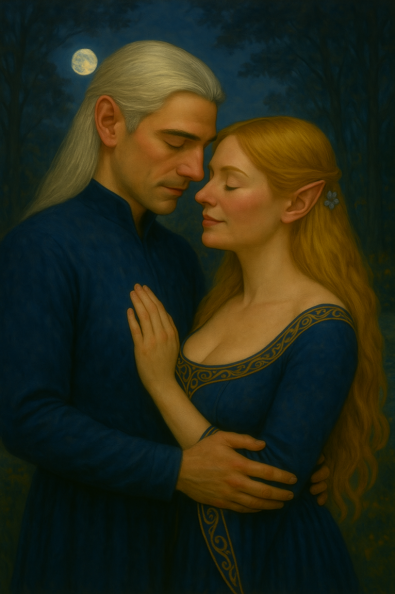

🌿 Casal das Estrelas
Thalion, o guardião de Lindon, e Lyra, a arqueira das estrelas, formaram um dos pares mais reverenciados entre os elfos. Unidos pela música dos ventos e pela luz das árvores élficas, sua história ecoa nas canções de Lothlórien.
Juntos, enfrentaram as sombras de Angmar, protegeram os portões de Lindon e inspiraram gerações com sua coragem e devoção. Lyra, com sua precisão lendária, e Thalion, com sua sabedoria ancestral, tornaram-se símbolo de amor e força.
⚔️ Missões Compartilhadas
- Resgate em Angmar: Juntos infiltraram-se nas ruínas de Carn Dûm para libertar prisioneiros élficos.
- Guardiões de Lindon: Patrulharam as fronteiras durante a ascensão das forças sombrias no norte.
- Aliança com os Ents: Lyra negociou com os Ents de Ossiriand enquanto Thalion protegia os mensageiros.
- Defesa de Lothlórien: Lutaram lado a lado contra invasores de Dol Guldur, salvando o bosque dourado.
🌙 O Encontro Sob as Estrelas
Foi durante uma vigília nas margens do Rio Celebrant que Thalion avistou Lyra pela primeira vez. Ela cantava para as estrelas, e sua voz parecia tecer luz no ar. Ele, silencioso, observava à distância, até que uma folha caiu entre eles — e seus olhares se cruzaram.
Desde então, suas jornadas se entrelaçaram. A cada missão, a cada batalha, o vínculo se fortalecia. Não por palavras, mas por gestos, olhares e silêncios compartilhados.
🏹 Lyra – A Arqueira das Estrelas
Nascida em Lórien, Lyra foi treinada por Haldir e abençoada por Galadriel com um arco de galho de Mallorn. Sua mira é lendária, capaz de atingir alvos em movimento sob neblina. Mas sua maior força está na empatia: ela ouve os ventos e entende os sussurros das árvores.
🛡️ Thalion – O Guardião Silencioso
Discípulo de Gil-galad, Thalion é mestre em estratégia e combate furtivo. Seu silêncio é sua arma: ele observa, analisa e age com precisão. Dizem que ele conhece cada trilha de Lindon como conhece os traços do rosto de Lyra.
💍 A Promessa Sob a Lua
Em uma noite de lua cheia, sob a árvore de Telperion renascida, Thalion e Lyra trocaram votos élficos. Não houve testemunhas, apenas a luz das estrelas e o sussurro das folhas. Desde então, seus corações batem em sintonia com a canção da Terra-média.
📸 Momentos Eternos

